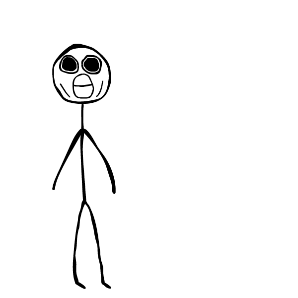

GENERIC_ERROR is the name I create and produce some of my work under, and it has been ongoing since late 2016. It is an identity meant to be native to both digital and analog spaces. The primary way I distribute the illustrations is via Instagram (@generic_error) or Twitter (@GENERIC_ERROR).
GENERIC_ERROR intentionally plays with the overlap between the physical and the digital. I primarily illustrate on paper, and then scan with an app to fully process the work. They are meant to sit on white backgrounds so they appear hand-drawn on the screen.
In 2017, I produced a collection of zines entitled “I DON’T BELIEVE IN MAGIC 8 BALLS.” They were released via the site genericerror.me, which was designed to look like a page out of the zine. The collection can be downloaded as a PDF for printing or viewing on a digital device.
